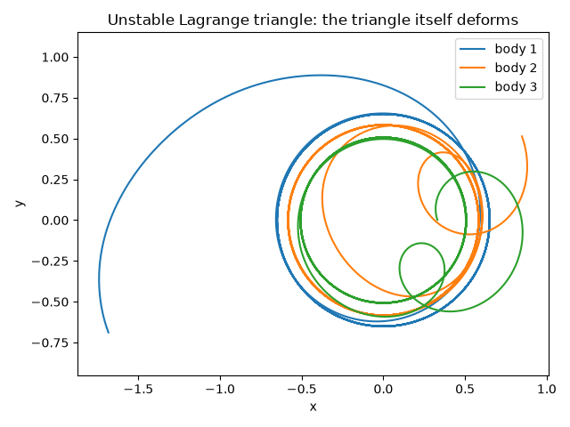
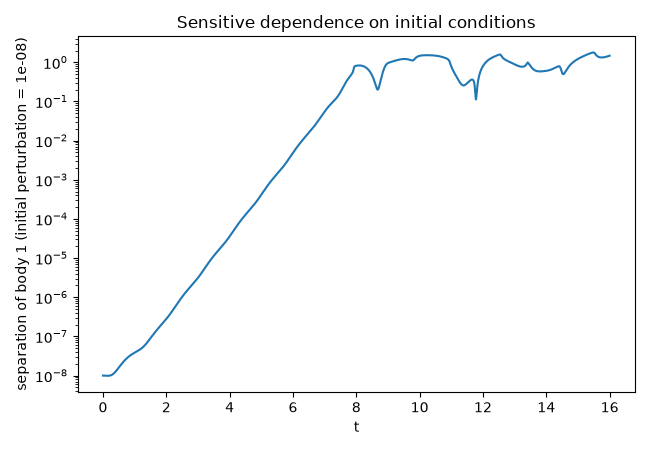

Note
Go to the end to download the full example code.
Poincare’s discovery: sensitive dependence in the three-body problem#
Studying the three-body problem for King Oscar II’s 1889 prize, Poincare
found that no general closed-form solution exists at all: two
trajectories starting arbitrarily close together can separate at an
exponential rate, the first rigorous demonstration of what would later
be called deterministic chaos. Lagrange (1772) found one very special
three-body configuration that is exactly solvable – three masses at
the vertices of an equilateral triangle, rigidly rotating about their
common center of mass – but Routh (1875) showed its linear stability
depends on the mass ratios (stable only when one mass strongly
dominates, as for the Sun-Jupiter-Trojan system). For masses like 3, 4,
and 5 (in \(G=1\) units), it is deep in the unstable regime, and
provides a numerically clean, close-encounter-free setting to watch
Poincare’s sensitive dependence directly with
NBodySystem, without needing to resolve
the extreme close encounters of a genuinely colliding configuration.
import matplotlib.pyplot as plt
import numpy as np
from physicskit.astro.nbody import NBodySystem
from physicskit.astro.visualizers import plot_nbody_trajectories
The (unstable) Lagrange equilateral-triangle equilibrium#
Three masses at the vertices of an equilateral triangle of side
d, each moving on a circle about the (mass-weighted) center of
mass with the same angular velocity
\(\Omega=\sqrt{GM_{\rm tot}/d^3}\) – an exact rotating
equilibrium for any choice of the three masses, a remarkable
property special to the equilateral configuration.
masses = np.array([3.0, 4.0, 5.0])
M_tot = masses.sum()
d = 1.0
R_geom = d / np.sqrt(3)
angles = np.deg2rad([90.0, 210.0, 330.0])
vertices = np.stack([R_geom * np.cos(angles), R_geom * np.sin(angles), np.zeros(3)], axis=1)
center_of_mass = (masses[:, None] * vertices).sum(axis=0) / M_tot
positions0 = vertices - center_of_mass
Omega = np.sqrt(M_tot / d**3)
z_hat = np.array([0.0, 0.0, 1.0])
velocities0 = Omega * np.cross(z_hat, positions0)
side_lengths = [np.linalg.norm(positions0[i] - positions0[j]) for i, j in [(0, 1), (1, 2), (2, 0)]]
print(f"initial side lengths (should all equal d={d}): {np.round(side_lengths, 6)}")
initial side lengths (should all equal d=1.0): [1. 1. 1.]
Two runs, perturbed by one part in \(10^8\)#
Identical initial conditions and identical integration, except that the perturbed run’s first body starts displaced by \(10^{-8}\).
dt, n_steps = 0.001, 16_000
baseline = NBodySystem(positions0, velocities0, masses, softening=1e-6)
E0 = baseline.total_energy()
history_baseline = baseline.simulate(dt, n_steps)
E1 = baseline.total_energy()
print(f"energy conservation check: relative drift = {abs((E1 - E0) / E0):.2e} (leapfrog is trustworthy here)")
perturbation = 1e-8
positions0_perturbed = positions0.copy()
positions0_perturbed[0, 0] += perturbation
perturbed = NBodySystem(positions0_perturbed, velocities0.copy(), masses, softening=1e-6)
history_perturbed = perturbed.simulate(dt, n_steps)
fig1, ax1 = plot_nbody_trajectories(history_baseline)
ax1.set_title("Unstable Lagrange triangle: the triangle itself deforms")
fig1.tight_layout()

energy conservation check: relative drift = 1.18e-06 (leapfrog is trustworthy here)
Exponential separation, then saturation#
A single part-in-\(10^8\) initial nudge grows, on a semi-log plot, as a straight line – exponential divergence – for as long as the separation stays much smaller than the system’s own size, then saturates once it does not: exactly the two-stage signature of deterministic chaos, and exactly what makes long-term three-body prediction impossible in practice, regardless of how precisely the initial conditions are known.
separation = np.linalg.norm(history_baseline[:, 0, :] - history_perturbed[:, 0, :], axis=1)
t = np.arange(n_steps + 1) * dt
fig2, ax2 = plt.subplots(figsize=(6.5, 4.5))
ax2.semilogy(t, np.maximum(separation, 1e-300))
ax2.set_xlabel("t")
ax2.set_ylabel(f"separation of body 1 (initial perturbation = {perturbation:.0e})")
ax2.set_title("Sensitive dependence on initial conditions")
fig2.tight_layout()
growth_mask = (t > 1.0) & (t < 7.0) & (separation > 0)
slope = np.polyfit(t[growth_mask], np.log(separation[growth_mask]), 1)[0]
print(f"\nseparation grows from {separation[growth_mask][0]:.2e} to {separation[growth_mask][-1]:.2e} over t in [1, 7]")
print(f"fitted exponential growth rate (Lyapunov-like exponent): {slope:.3f} per unit time")
plt.show()

separation grows from 3.85e-08 to 5.52e-02 over t in [1, 7]
fitted exponential growth rate (Lyapunov-like exponent): 2.414 per unit time
Total running time of the script: (0 minutes 0.620 seconds)